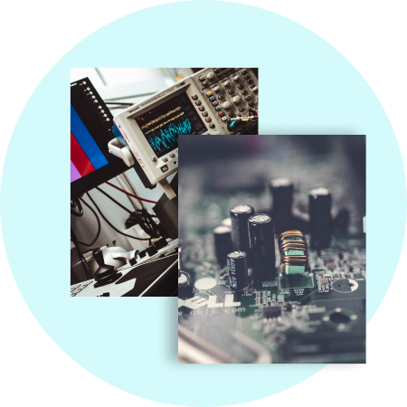

Who are we?
We offer a comprehensive portfolio of independent technical advisory, testing,
inspection, certification and software services to the solar energy industry that empower
trust throughout the project life cycle and across
the value chain. We can help you with services to
manage the safety and performance of materials,
components, products and systems with testing,
inspection and certification.

Services we provide
- Project Development Support
Decisions made during the earliest stages of solar project development are crucial to long-term success. We help you navigate complexities and mitigate risks associated with site screening, feasibility, resource assessment, array design, energy assessment, technology selection and suitability, infrastructure and balance of plant. Visit Solar Project Development Support to learn more.
- Asset Management
Growing investments in renewable power plants, aging fleets and the desire to ensure safety while maximizing asset value all drive companies to our asset management services. We help you evaluate and optimize your projects’ operations and maintenance (O&M), contracts, health and safety and remaining useful life. Our goal is to help you maximize energy production, reduce downtime and O&M costs, help assess project safety standard compliance, and support key decisions around asset life and repowering. See Asset Management for more information.
-
Due Diligence
We provide comprehensive, flexible and timely due diligence services for the wind industry. We help make the critical financial close of a wind project as smooth and successful as possible. Leverage our technical and commercial expertise, along with our understanding of the intricacies of project finance to raise capital. Our team of engineers and technical advisers will help you prepare your project for financing, mitigate risk, and assess whether project proposals comply with technical standards and are ready for construction. The approach we employ for our Independent Engineering (IE) reports has been thoroughly vetted with some of the world’s top lead arrangers and lenders, so we know exactly what they are looking for, supporting a timely transaction. Visit Due Diligence for more information.
- Grid Solutions
Our grid solutions services focus on integrating large quantities of renewable energy into the power grid. As the renewable energy market grows so does the importance of quantifying the impact of centralized and distributed wind and solar technologies on our power infrastructure. Understanding power generation characteristics that result from wind variability across space and time is key to helping promote safe, reliable and economical operations. See Grid Solutions to learn more.
- Software and Data
We offer a range of software products to support the development, assessment and operation of renewable energy projects. These products leverage our knowledge and expertise to enable your team to do its work more productively, effectively and the option to work more independently. See Wind Software to learn more.
- Large Scale Grid and Market Studies
Developing good policies and effective plans for expanding renewable energy requires reliable and detailed information about resources, energy production potential, plant output characteristics, economic impact and other factors. If you are responsible for putting policies or infrastructure in place to support a sound growth path and reliable energy delivery, we can provide the data and expert advice you need. Visit Research and Advance Studies for more information.
- Certification
As wind energy technologies advance, their continued safety, reliability and performance is important. As safety science experts, we help clients navigate these risks through certification for products, projects and grid code compliance. See Certification to learn more.
List of UL Certified PV Installers
Testing and Inspection
Manufacturers of renewable technologies, such as wind turbines and peripheral equipment, rely on our technical and safety science experts to help navigate the risks. We operate renewable energy testing sites around the globe and perform inspections of operating equipment in the field. Visit Testing and Inspection for more information.
Commercial Laboratory Services
We offer commercial laboratory services for the solar industry designed to meet the needs of laboratory directors and quality/compliance managers who are responsible for testing laboratories used for research, new product development, product performance, reliability or quality evaluations. See Commercial Laboratory Services to learn more.
}